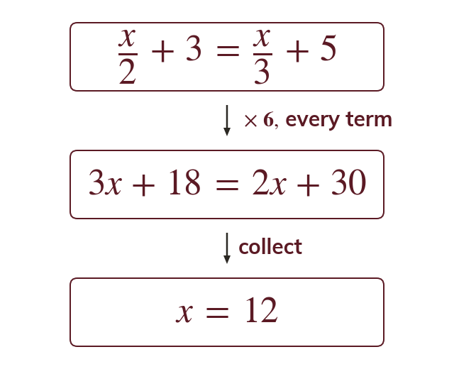
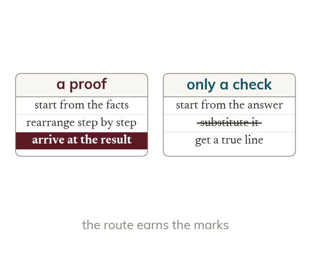
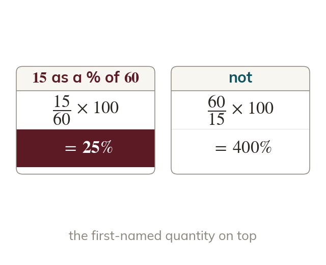
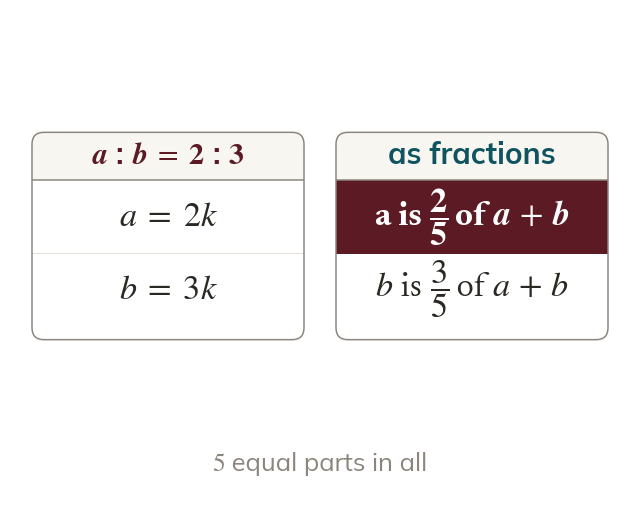

Clear the fractions
Every term is multiplied by the LCM of the denominators. Then the equation has no fractions left.
Solving the equation is the easy half - the harder half is a 'show that' question, where you are handed the answer and marked on the route to it, which is the first time this course asks you to write algebra that convinces a reader rather than just lands on a number.
Work down the page at your own pace. Write every answer in your book first, then click to check it.
Read each card, then follow the worked examples one step at a time.

Every term is multiplied by the LCM of the denominators. Then the equation has no fractions left.

A show-that question gives the answer. The marks are for the algebra that reaches it.
Pick an answer. If it's wrong, the feedback tells you which mistake it was.
Section Solving linear equations : equations with brackets and fractions, and equations formed from word problems.
Read each card, then follow the worked examples one step at a time.

The value of as a percentage of is
The quantity named first goes on top.

If : : then a is of the total. So and for some number
Pick an answer. If it's wrong, the feedback tells you which mistake it was.
Section Algebra and number : percentages written with letters, 'show that' questions, and ratios written algebraically.
Finished? Next lesson: 1.5 Expanding Brackets.
Log in, then search for a code to practise that skill.